|  |
Discover Baalbek |
About BaalbekBaalbek District is an administrative district in the Baalbek-Hermel Governorate of the Republic of Lebanon, having the city Baalbek as its capital. It is by far the largest district in the country. Baalbek District is between the peaks of the western chain of Mount Lebanon and the eastern chain of the Anti-Lebanon. It consists mainly of land in arid semi-desert climate, except for banks of the Litani and Orontes rivers (El Aass), around which concentrates the majority of residential settlements. Other areas remain uninhabited and constitute the majority of arid known as "Jouroud Baalbek." Area of BaalbekBaalbek covers an area of 2319 km2 PopulationPopulation of Baalbek is about 350,000 Number of registered voters in 2021 is 277,414 MunicipalitiesNumber of municipalities is 74 |